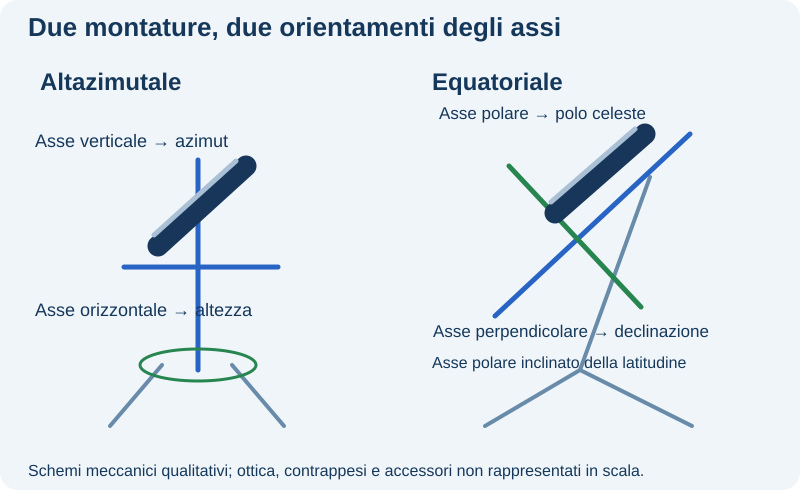
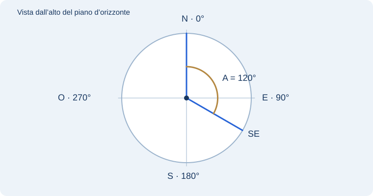

1. Un indirizzo stellare e due domande differenti
Quando dici “verso sud, alto 30°”, descrivi dove guardare da qui, adesso. Altezza e azimut si riferiscono al tuo orizzonte. Quando leggi ascensione retta e declinazione, usi una griglia equatoriale condivisa dal catalogo: prima di trasformarla nella direzione osservabile devi aggiungere luogo e istante.
L’equatore celeste è il cerchio ottenuto prolungando il piano dell’equatore terrestre. La declinazione δ misura l’angolo a nord o a sud di quel cerchio: 0° sull’equatore, +90° al polo nord e −90° al polo sud. Non è l’altezza sull’orizzonte. Una stella con δ=+20° non è necessariamente a h=20°.
L’ascensione retta α si misura verso est lungo l’equatore a partire dal punto vernale, dove il Sole attraversa l’equatore andando dall’emisfero celeste australe a quello boreale. Il punto vernale è un riferimento geometrico, non una stella. AR=0h e AR=24h coincidono: sono la chiusura dello stesso giro. Un’ora di AR equivale a 15°, ma non dice che la stella sarà visibile a quell’ora dell’orologio.
Per esempio α=6h e δ=+30° identificano l’intersezione del raggio 6h con il parallelo +30°. L’oggetto ipotetico può essere sotto il tuo orizzonte: la carta non garantisce la visibilità. Per passare al cielo locale servono latitudine e orientamento del cielo rispetto al meridiano, calcolato da data, ora e longitudine. Nel laboratorio questo orientamento è espresso dal tempo siderale locale; non va confuso con l’ora civile.

Coordinate e montatura non sono sinonimi. Le coordinate descrivono una direzione; la montatura è il sostegno che permette di orientare lo strumento. L’altazimutale ruota attorno a un asse verticale e inclina il tubo attorno a un asse orizzontale. Per seguire una stella deve coordinare normalmente entrambi i movimenti. È intuitiva e valida per osservare; in una lunga ripresa occorre considerare anche la rotazione di campo.
Nell’equatoriale l’asse polare viene reso parallelo all’asse terrestre: nell’emisfero boreale punta verso il polo nord celeste, inclinato dell’angolo della latitudine sull’orizzonte nord. L’altro asse cambia la declinazione. Se l’allineamento è corretto, una stella può essere inseguita principalmente ruotando il solo asse polare alla velocità siderale. Per puntarla, invece, possono servire entrambi gli assi. Motorizzazione, GoTo e geometria della montatura sono proprietà differenti.
Allineare l’asse polare non significa semplicemente centrare la Polare con il telescopio: la Polare è vicina al polo e il tubo può guardare altrove. Non forzare manopole o assi: per procedure, bilanciamento e limiti meccanici usa il manuale specifico. L’equatoriale non elimina gli errori di inseguimento e l’altazimutale non impedisce ogni fotografia; la scelta dipende da durata delle pose, campo, derotazione e obiettivo osservativo.
Percorso ispirato all’articolo di Fabio Rocca, Impariamo il cielo — Prima dell’oculare, fornito dall’autore per AD ASTRA. Spiegazione rielaborata per questa lezione.
Riferimenti: Treccani · Coordinate astronomiche, lezione PDF · Stellarium · Guida ufficiale
2. Coordinate per chi osserva
Il sistema d’orizzonte usa azimut A e altezza h. Nella convenzione adottata qui, A parte dal nord e cresce verso est; h parte dal piano d’orizzonte e cresce verso lo zenit. Una posizione sotto l’orizzonte ha altezza negativa. Allo zenit, l’azimut non individua una direzione unica.

Queste coordinate sono immediatamente utili per puntare, ma dipendono da luogo e istante. Una stella non conserva gli stessi valori durante la notte; osservatori in città diverse possono misurare contemporaneamente coppie differenti.
Riferimenti: University of Nebraska–Lincoln · Coordinate celesti e d’orizzonte
3. Coordinate per riconoscere l’oggetto
Il sistema equatoriale usa come riferimento l’equatore celeste, ottenuto proiettando idealmente l’equatore terrestre sulla sfera. La declinazione δ misura l’angolo a nord o a sud di quel cerchio: positiva verso il polo nord, negativa verso il polo sud. L’ascensione retta α indica la posizione lungo l’equatore rispetto all’origine convenzionale del sistema.
L’ascensione retta si esprime spesso in ore, minuti e secondi: 24 ore corrispondono a un giro di 360°, quindi un’ora corrisponde a 15°. Non confondere queste ore angolari con l’ora civile a cui osservi. La declinazione si esprime in gradi, primi e secondi d’arco.
Riferimenti: Treccani · Coordinate astronomiche, lezione PDF
4. Da un sistema all’altro: che cosa serve
Ascensione retta e declinazione descrivono una direzione rispetto al quadro equatoriale. Altezza e azimut descrivono la stessa direzione rispetto all’osservatore. La trasformazione richiede la latitudine e l’orientamento istantaneo del cielo rispetto al meridiano locale.
Questo orientamento si esprime con il tempo siderale locale: il valore dell’ascensione retta che in quell’istante passa sul meridiano. Non coincide con l’ora civile. Per un astro con ascensione retta α, l’angolo orario è H = tempo siderale locale − α, considerando correttamente il giro completo delle 24 ore.
Se il tempo siderale locale è 8h e l’astro ha α = 6h, H = 2h: l’astro ha oltrepassato il meridiano di 30° nella convenzione del modello. Per ricavare l’altezza non basta però quel numero; entra anche la declinazione, insieme alla latitudine.
Il laboratorio ti fa scegliere direttamente il tempo siderale locale per isolare la geometria. Un planetario reale lo ricava da data, istante e longitudine. Non usare quindi il valore del cursore come se fosse l’orario da leggere sull’orologio di una città.
Riferimenti: Treccani · Coordinate astronomiche, lezione PDF · OpenStax · Earth and Sky
5. Perché il riferimento va dichiarato
Un catalogo specifica il sistema e i riferimenti temporali delle coordinate. Indicazioni come J2000 accompagnano valori riferiti a un quadro convenzionale; per un uso preciso occorre distinguere epoca, equinozio e sistema di riferimento. Precessione e moto proprio spiegano perché i valori non sono numeri immutabili validi per ogni operazione.
Per le prime osservazioni non devi effettuare a mano tutte le trasformazioni: un planetario digitale può farle. Devi però sapere quali dati hai inserito, quale luogo e quale ora usa il programma e se la carta presenta coordinate locali o di catalogo.
Riferimenti: Treccani · Coordinate astronomiche, lezione PDF · Stellarium · Guida ufficiale
6. Segni e conversioni che evitano errori
Per l’ascensione retta, 5h 30m equivalgono a 5,5h e quindi a 82,5°. I minuti di questa scrittura sono suddivisioni di un’ora angolare. Per la declinazione, −10° 30′ significa −10,5°: il segno riguarda l’intero angolo, non soltanto la parte intera.
Queste distinzioni evitano errori di posizione anche grandi. Non sommare automaticamente +0,5° a −10° se la notazione indica −10° 30′. Scrivi prima il valore con una convenzione chiara e solo dopo effettua la conversione. Allo stesso modo, non interpretare 6h di ascensione retta come una previsione di osservabilità alle sei del mattino.
Vicino allo zenit, l’azimut può cambiare molto pur restando la direzione molto vicina alla verticale. Esattamente allo zenit non è definito un azimut unico: tutti i cerchi verticali lo attraversano. È una particolarità del sistema di coordinate, non un comportamento anomalo dell’astro.
Riferimenti: Treccani · Coordinate astronomiche, lezione PDF
7. Precisione, epoca e limiti del modello
Un numero con molte cifre non garantisce una misura accurata. Se stai pianificando a occhio nudo, una descrizione approssimata può essere sufficiente. Se vuoi puntare un campo piccolo o confrontare misure astrometriche, diventano importanti riferimento, epoca, moto proprio e trasformazioni applicate.
L’epoca indica il riferimento temporale di determinate grandezze; l’equinozio entra nell’orientamento di certi sistemi equatoriali; il quadro di riferimento definisce il sistema complessivo. Questi termini non sono intercambiabili. In una prima attività non serve calcolare ogni correzione a mano, ma occorre conservare le informazioni del catalogo e sapere come le usa il software.
Il laboratorio assume una sfera geometrica ideale e coordinate già espresse in un quadro coerente. Non simula precessione, moto proprio, parallasse o rifrazione. Le sue cifre servono a verificare una relazione, non a fornire una previsione di precisione per un bersaglio reale.
Riferimenti: Treccani · Coordinate astronomiche, lezione PDF · Stellarium · Guida ufficiale
8. Verificare una trasformazione
Imposta H = 0, latitudine 43° nord e declinazione +20°. Verifica che l’altezza al transito sia 67°. Imposta poi declinazione +43°: il bersaglio raggiunge lo zenit e l’azimut perde un valore unico. Infine cambia soltanto il tempo siderale locale e osserva come si modifica la posizione rispetto all’orizzonte.
Perché questi controlli sono utili
Il primo caso verifica la formula dell’altezza massima. Il secondo mette in evidenza una singolarità della rappresentazione altazimutale. Il terzo separa la direzione di catalogo dal suo aspetto locale durante il moto apparente.
Riferimenti: Treccani · Coordinate astronomiche, lezione PDF
9. Dal catalogo all’orizzonte
Una coordinata α = 6h non significa che l’oggetto è osservabile alle sei: significa una posizione angolare equivalente a 90° lungo il cerchio di riferimento. Un’altezza h = 6° significa invece che il bersaglio è basso sull’orizzonte in un certo luogo e istante. La stessa lettera o una stessa cifra può avere significati diversi: controlla sempre il sistema.
Cerca un oggetto in Stellarium, leggi ascensione retta e declinazione, poi altezza e azimut. Avanza di un’ora e annota quali valori cambiano in modo evidente. Infine cambia città mantenendo l’istante: collega la variazione alla posizione dell’osservatore.
Riferimenti: Stellarium · Guida ufficiale
Testo originale AD ASTRA, sviluppato dal quadro didattico ricavato dal confronto di circa 60 risorse e verificato sui riferimenti pertinenti indicati in questa lezione. Le fotografie mostrano soggetti reali; i diagrammi spiegano il modello e dichiarano le semplificazioni.